8.0 Bug Reports and Other Feedback
The Engineering Sketch Pad (ESP) is a browser-based program for
creating, editing, and generating constructive solid models for
use in the multi-disciplinary analysis and optimization of
engineered systems. ESP can use either the
EGADS/OpenCASCADE or CAPRI geometric
modeler.
In most cases, a user will start with a configuration that is
described in a .csm file and then modify it and/or
build it via OpenCSM's various commands.
This Tutorial will help you understand the use
of serveCSM and ,code>ESP for a variety of
tasks. Details about the Command Line, cursor and keyboard
options, and the .csm file are contained in
sections that follow this Tutorial.
The Tutorial starts with a pre-made part that is defined by the
file tutorial.csm. (See
"Example .csm file" below for a listing of this
file.)
To start ESP there are two steps: (1) start the
"server" and (2) start the "browser". This can be done in a
variety of ways, but the two most common follow.
Technique 1: issue the two commands:
setenv WV_START "open -a /Applications/Firefox.app ../ESP/ESP.html"
serveCSM ../data/tutorial
if using a c-shell; make appropriate changes for your shell
and/or operating system.
The first of these tells serveCSM to open FireFox
on the file ../ESP/ESP.html
when serveCSM has generated a graphical
representation of the configuration. The second of these
actually starts the serveCSM server. As long as
the browser stays connected
to serveCSM, serveCSM will stay alive
and handle requests sent to it from the browser. Once the last
browser that is connected to serveCSM
exits, serveCSM will shut down.
Technique 2: issue the command:
serveCSM ../data/tutorial
Once the server starts, start a browser (for example, FireFox or
GoogleChrome) and open the page ESP/ESP.html. As
above, serveCSM will stay alive as long as there is
a browser attached to it.
Note that the default "port" used by serveCSM is
7681. One can change the port in the call
to serveCSM with a command such as:
serveCSM ../data/tutorial -port 7788
Once the browser starts, you will be prompted for a "hostname:port" as in:
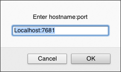
Most of the time, the "hostname" will be "Localhost" (meaning
that serveCSM and the browser are on the same
computer). It is possible to attach to serveCSM
that is running on another computer by giving an appropriate
"hostname".
As mentioned above, it is possible to change the "port" with
a command line argument when starting serveCSM; if
that is done, then the alternative "port" must be included in
ESP's prompt.
Once all the setup is done, the browser then presents the following 3 windows:
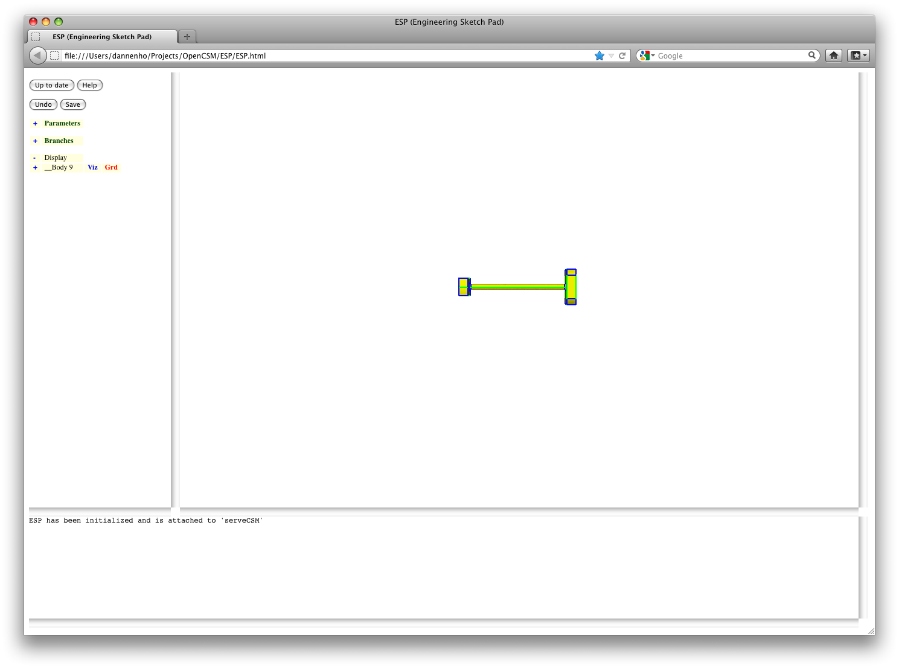
The window on the top left is called the "Tree" window. It contains listings of the Parameters and Branches in the model. It also contains the controls for the "Graphics" window.
The window on the top right is called the "Graphics" window. It contains a graphical representation of the current configuration.
The window on the bottom is called the "Messages" window. It
contains the messages that ESP posts for the user.
The first thing to do is to play with the image in the "Graphics" window. This is done with the mouse in the following ways:
At any time, a user might want to "save" a view. This is done by pressing the ">" key; the "saved" view can be retrieved by pressing the "<" key. If you want to retrieve a view more than once, simply press ">" after retrieving to re-"save" the view. If you press "<" twice, you will be returned to the original view.
Standard views can be obtained by pressing:
When using the mouse, it is possible to enter "flying mode", in which the view continually changes until the mouse button is released. Flying mode is particularly useful when one needs to translate a long distance. Toggling flying mode is done with the "!" key.
To interrogate the image, simply put your cursor over any object in the "Graphics" window and press "q"; a summary of the identified object is shown in the "Messages" window.
Lastly, to get help on the commands that are available in the "Graphics" window, press "?" and a short listing will be given in the "Messages" window.
The results of several of these commands is shown in:
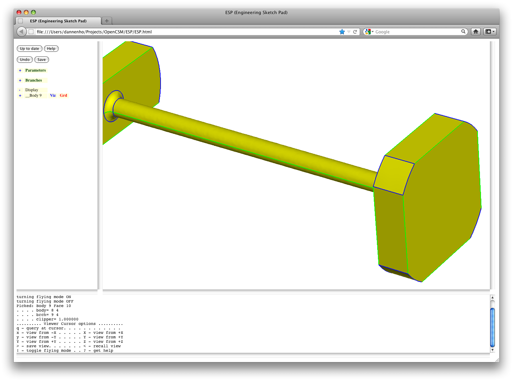
Now it is time to understand the "Tree" window. At the top of the "Tree" window is a series of buttons:
ESP HELP document (that you are now
reading)Below the buttons is a tree-like representation of the "Parameters" and "Branches" that describe the current "model". In all cases, pressing the "+" at the beginning of any line expands (opens up) that particular entry in the tree; pressing the "-" at the beginning of any line collapses (closes) that particular entry.
Start off by pressing the "+" to the left of the word "Parameters". When this is done, all the parameters in the current model are displayed as shown in:
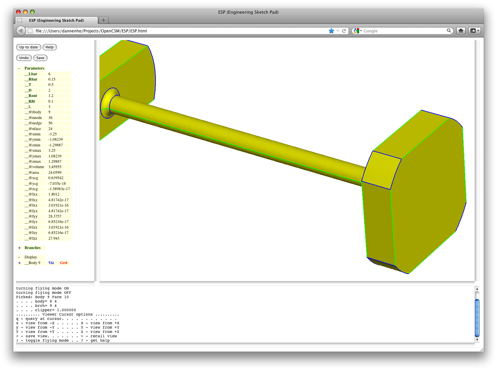
Notice that some of the parameter names are shown in green type; this indicates that the parameter can be "editted" by the user; those listed in black type are "read-only" parameters that cannot be editted.
Press on the label "__Lbar" to edit the parameter named "Lbar". (The leading underscores are there to adjust spacing in the listings and are NOT part of the actual parameter name.) When this is done, the user is provided with a prompt that asks for the new value; the current value is pre-loaded in this prompt window, as in:
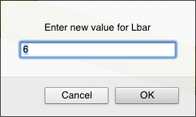
For now change the value to "9" and press "OK". Note that the parameter name is now listed in red (to indicate that it has been changed) and that the button at the top of the "Tree" window has changed to a green button that says "Press to re-build". This tells the user that changes have been made, but that the configuration shown in the "Graphics" window has not been updated. (The reason this is done is that a user might want to make several changes to the "model" before spending the CPU time necessary to re-build.)
Press the "Press to re-build" button and notice that it first turns yellow while the configuration is being rebuilt. Then (after a few seconds) the image in the "Graphics" window will be updated and the "Parameters" will no longer be red.
We will now change the value of "Lbar" back. But this time, instead of pressing on "__Lbar", we will use the context-sensitive menu. To do this, right-click on the "__Lbar" and the following menu will be displayed:
The first item in this menu, "Edit", is the default action that happens when you clicked on "__Lbar" (previously). Choose "Edit" and change the value back to "6". (Do not re-build yet.)
Collapse the parameters by pressing the "-" to the left of the word "Parameters" and expand the branches by pressing the "+" to the left of the word "Branches". This will result in a screen that looks like:
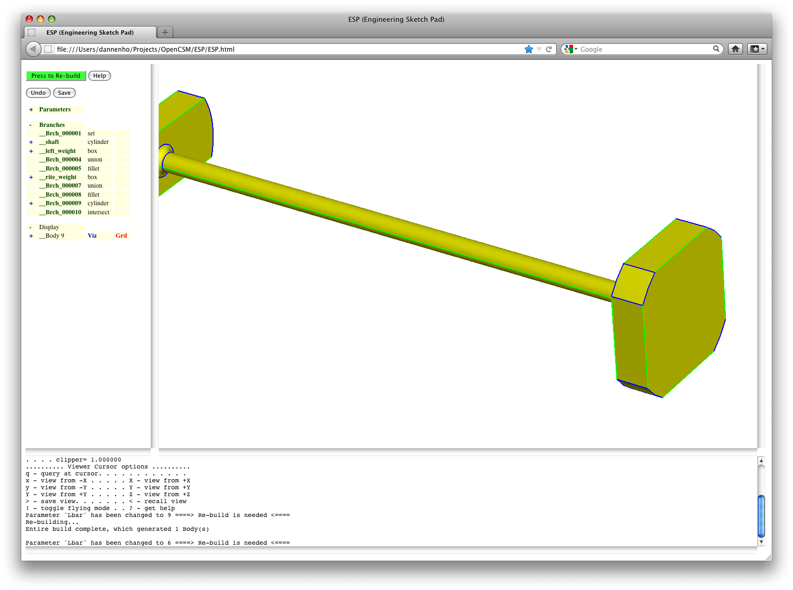
There is an "Undo" button near the top of the "Tree" window. This button un-does your last change; an example of using this is shown later in this tutorial. If you use this button, the banch names on you screen will differ from those seen here (since the branch names are generated sequentially). Therefore, when the instructions below refer to "Brch_0000xx", translate that branch name into the branch name on your screen; the relative positions on the branches in your list should match those that ae shown in this tutorial.
We are going to want to add a "sphere" to this configuration. Do this by pressing "Branches", giving you the prompt:
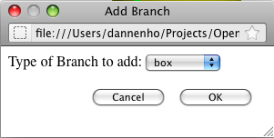
We will choose a "sphere" and press "OK", giving us:
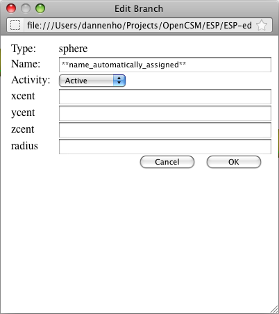
Now fill in the entries with "xcent" set to "1", "ycent" set to "0", "zcent" set to "0", and "radius" set to "2". Press "OK" and then "Press to -rebuild" and you should see:
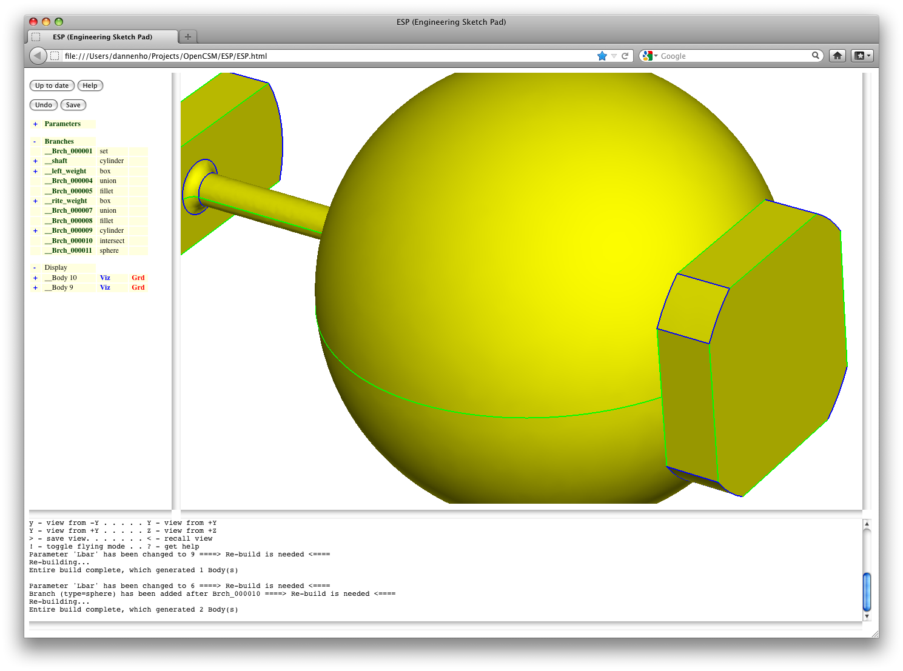
Now let's look at the "Display" part of the "Tree" window. By default "Display" is expanded and you can see that you have two bodies named "Body 10" and "Body 9". Expand the listing for Body 9 by pressing the "+" to the left of "Body 9" and you will see entries for faces and edges. To the right of "____Faces" (below "__Body 9") you will see three items:
Notice also that there is a "+" to the left of "____Faces", which indicates that you can interact with the object on a face-by-face basis. The basic rules here are:
Now let's "combine" the sphere and the original solid by adding a "union" branch. (Press "Branches" and add a "union"). Re-build the configuration and you should get the solid shown in:
Note that we now only have one body.
After some thought you realize that you really didn't want the fusion of these two volumes, but instead you wanted the solid that is common to them. First, remove the "union"; this can easily be done by right-clicking on "Branches" and then choosing "Delete last Branch".
Now add the intersection by pressing "Branches" and then choosing "intersect". This operation wants to know what happens if more than one solid is produced by the operation. Specifically, the "$order" argument describes how the bodies that are produced should be ordered: for example in order of volume, surface area, ... The "index" argument tells which body in the list should be selected. Since we are only expecting one body to be produced, we can leave the defaults and then "Press to re-build", producing:
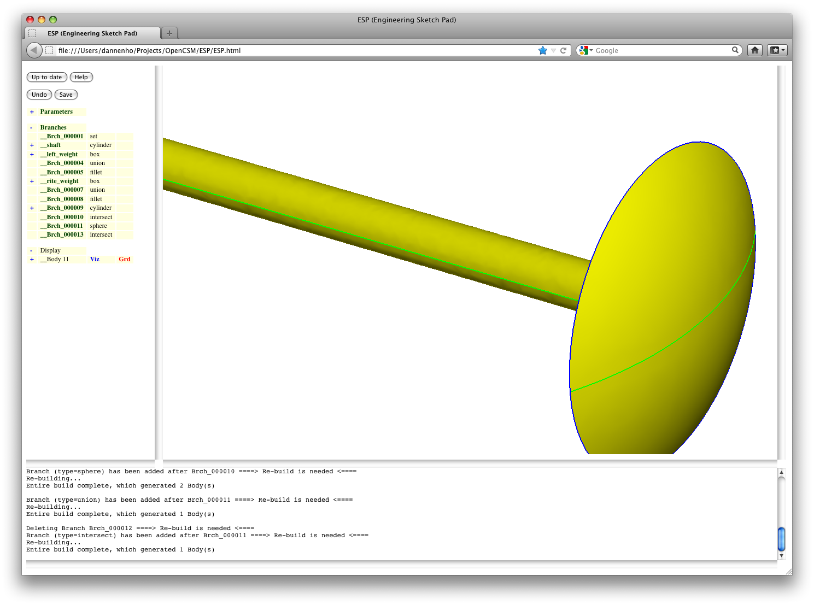
You notice that the "head" is too thin, and so you change the "radius" of the "sphere" to "2.3". (Press "__Brch_000011" and change the "radius".) While you are at it, change the parameter "__Rbar" to "0.4" (you will need to expand the parameters) and rebuild, producing:
Now we want to drill a hole through the center of the shaft; this is done by subtracting a cylinder from the solid; this is done with "Branches" and "cylinder". We want to the hole to go the entire length of the configuration (which is centered and whose length is 2*L), and so we enter "-1.2*L" for "xbeg" and "+1.2*L" for "xend"; the "1.2" simply ensures that the cylinder extends beyond the end of the configuration. Since it is on the centerline, set "ybeg", "zbeg", "ybeg", and "yend" all to "0", and finally the "radius" to "0.2".
Note that any argument can either be entered as a numeric constant or as an expression (using Matlab-like syntax), possibly using the name of a parameter (such as "L").
To add the "subtract" branch, we will right-click on "Branches" and choose "Add Branch at end" (which is the same as left-clicking on "Branches" since it is listed in the context-sensitive menu first). Choose "subtract", use the defaults and rebuild, producing:
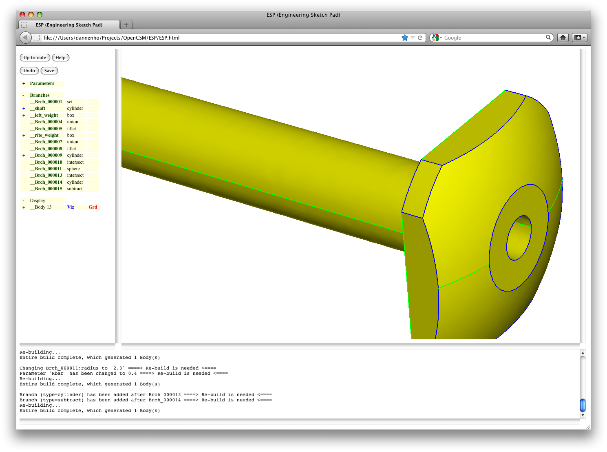
Now we want to create a series (pattern) of small holes that
are drilled across the shaft. Start by creating a new parameter
(by clicking on "Parameters") and name it "Rhole". The rules for
names is that they must start with a letter and contain up to 32
letters, digits, and underscores. Since parameters can have
multiple values (think "array"), ESP asks for the
number of rows and columns. Since we only have a single value,
enter "1" for both of these and then the value "0.08".
Now we are going to add a pattern of holes. Do this by adding a new "patbeg" branch; the "$pmtrName" will be "i" and the "ncopy" will be 7 (since we want 7 holes). (The "$" at the beginning of "$pmtrName" says that this is the name of the parameter that will be created rather than the value of the parameter "i". Also add a "cylinder" with "xbeg" and "xend" set to "i/3", "ybeg" and "yend" set to "0", "zbeg" set to "-1", "zend" set to "+1", and "radius" set to "Rhole". Press "OK".
We would now like to name this branch. To do this, edit the branch (by pressing "__Brch_000017") and change its "Name" to "small_holes". (Notice that we could not name it when we created it since the names are originally auto-created to ensure that we do not get an illegal name.)
Next add another "subtract" branch and finally a "patend" branch and then re-build (which will take several seconds), giving:
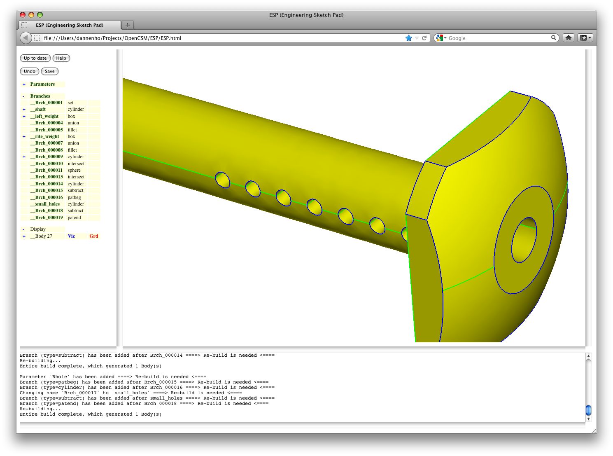
Now we want to change the hole in the center of the shaft into a hole that starts at "xbeg" equal to "0". Make the change to "__Brch_000014" and re-build. To see if you were successful, change the visibility of the faces and ensure that you have the correct hole, as in:
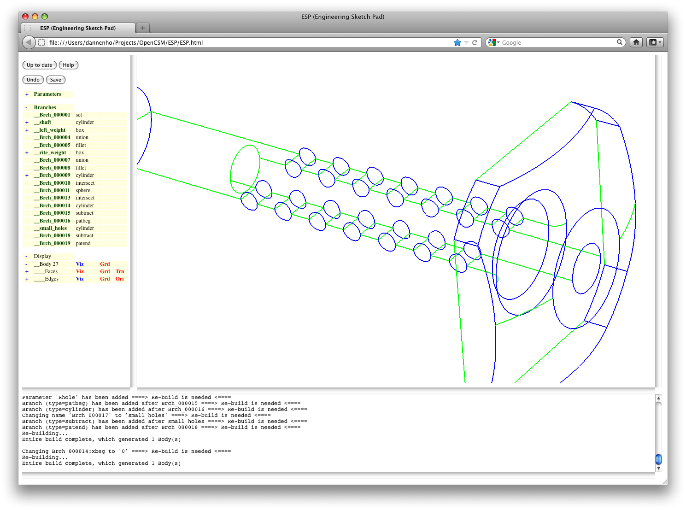
Now change the cylindrical hole into a conical hole. To do this, we must delete the cylinder hole (which is Brch_000014). Right-click on "__Brch_000014" and choose "Delete this Branch". Notice that doing this tells you that you have an error. To fix the error, add a conical hole after "__Brch_000013" by right-clicking "__Brch_000013" and choosing "Add Branch after", as in:
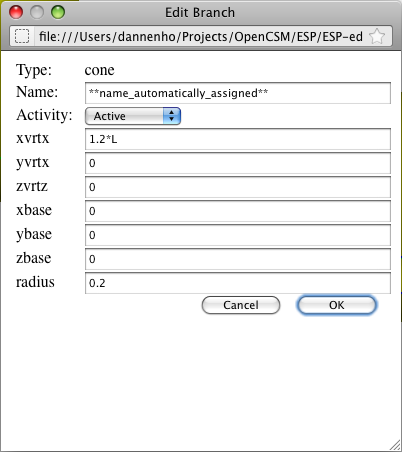
Re-build and notice that the vertex of the cone is near the head; we had meant to do it the other way, so change "xvrtx" to "0" and "xbase" to "1.2*L" and re-build, producing (after manipulating the display):
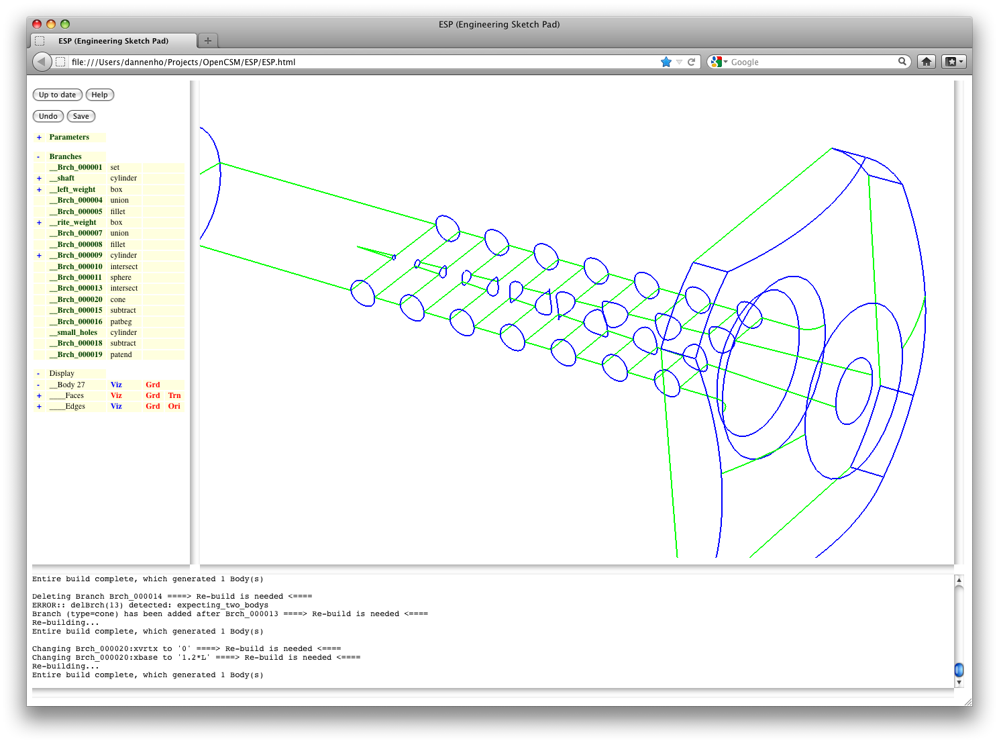
Now let's rotate the small holes, so after the "__small_holes" branch, add a "rotatex" with arguments "-15*(i-1)", "0", and "0", and rebuild, producing:
Now we will experiment with the "activity" of the branches. A branch that is "suppressed" is skipped during the re-build process. So press on "__small_holes" and set the activity to "Suppressed". Note that a few other branches become "inactive" (since they cannot be executed). Re-build, producing:
Now suppress "__Brch_000021" and activate "__small_holes" and re-build. Note that the hole re-appeared but that the rotatex is not executed. Finally, re-activate all branches and re-build.
Another feature is ESP allows a user to only build
part of the configuration. This is done by right-clicking on a
branch (for example, "__Brch_000010") and choosing "Build to
this Branch", giving:
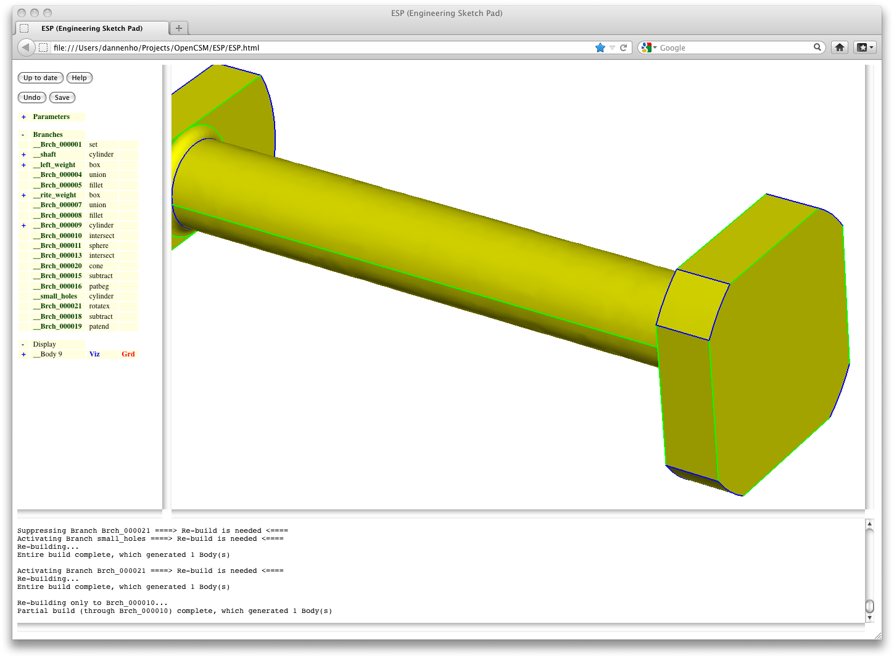
To rebuild the whole configuration, re-build to the last branch.
The last part of the ESP tutorial involves
attributes. Each branch can have zero or more attributes
associated with it that are carried throughout the build
process. By pressing the "+" to the left of "__Brch_000009",
its attribute ("____clipper") can be seen to have the value "1".
Change the attribute to "10" by pressing "____clipper" and
entering "10" at the prompt.
We can add an attribute to "__Brch_000009" by right-clicking and choosing "Add Attribute"; use the name "test" and the value "ESP". Press the "+" to the left of "__Brch_000009" and you will see that the branch now has 2 attributes. After some thought, you realize that "ESP" is not defined, so you can "undo" this change by pressing the "Undo" button at the top of the "Tree" window. Re-build.
Now point to the face the represents the corner of the head (as shown with its grid here) and press the "q" key, producing:
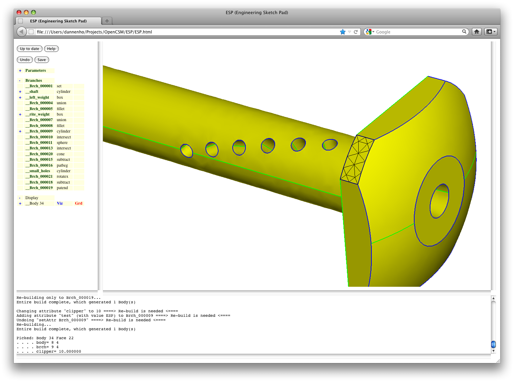
Note that the "Messages" window contains a description of the face including the attribute that we editted ("clipper" is "10") as well as a "body" and "brch" attribute. The latter tells which branch ("__Brch_000009") was responsible for generating that face.
Lastly, save your work by pressing the "Save" button and
choosing "tutorial_new.csm" as the name of the new file. Exit
the browser and you should see that serveCSM also
shuts down.
If we now rename the file journal file with:
mv port7681.jrnl tutorial.jrnl
we can replay our session by the command:
serveCSM ../data/tutorial -jrnl tutorial.jrnl
Alternatively, we can start with the new
tutorial_new.csm file with the command:
serveCSM tutorial_new
This tutorial covered most of ESP's user
interface. Further details are contained in the sections that
follow.
To start serveCSM, one uses the command:
serveCSM filename [-port portnum] [-outLevel n] [-jrnl jrnlname]
The -port option tells serveCSM with which
port to connect.
The -outLevel option sets the level of output (0
to 3) that the server should produce during its execution.
Higher numbers are useful for debugging and should seldom be used
by most users.
The -jrnl option is useful for replaying a
previous session. This journal file is an ASCII file that can
be created with any text-editor. But more typically, user
modifies the file portX.jrnl that is automatically
produced every time serveCSM is started. (Note: be
sure to copy and/or rename this file before using it as an input
to serveCSM since the next serveCSM
will overwrite this file.
The Tutorial (above) gives an overview of nearly all the
interactive commands that are available in ESP.
Future versions of this document will add more details here.
.csm FileThe .csm file contains a series of statements.
If a line contains a hash (#), all characters starting at the hash are ignored.
If a line contains a backslash, all characters starting at the backslash are ignored and the next line is appended; spaces at the beginning of the next line are treated normally.
All statements begin with a keyword (described below) and must contain at least the indicated number of arguments.
Extra arguments in a statement are discarded and can thus be used as a comment.
The last statement must be "end". (Everything else is ignored.)
All arguments must not contain any spaces or must be enclosed in a pair of double quotes (for example, "a + b").
Parameters are evaluated in the order that they appear in the file, using MATLAB-like syntax (see "Expression rules" below).
During the build process, OpenCSM maintains a LIFO
"Stack" that can contain Bodies and Sketches.
The csm statements are executed in a stack-like way, taking their inputs from the Stack and depositing their results onto the Stack.
The default name for each Branch is "Brch_xxxxxx", where xxxxxx is a unique sequence number.
# introduces comment
" ignore spaces until following "
\ ignore this and following characters and concatenate next line
<space> separates arguments in .csm file
0-9 digits used in numbers and in names
A-Z a-z _ letters used in names
. decimal separator (used in numbers)
, separates function arguments and row/column in subscripts
; multi-value item separator
( ) groups expressions and function arguments
[ ] specifies subscripts in form [row,column]
+ - * / ^ arithmetic operators
! as first character, forces argument to be evaluated
$ as first character, forces argument not to be evaluated (used internally)
@ as first character, introduces named constants
~ not used
% not used
& not used
= not used
{ } not used
' not used
: not used
< > not used
? not used
The following is taken from the OpenCSM.h file:
dimension pmtrName nrow ncol despmtr=0
use: set up a multi-value Parameter
pops: -
pushes: -
notes: sketcher may not be open
solver may not be open
nrow >= 1
ncol >= 1
pmtrName must not start with '@'
if despmtr=0, then marked as INTERNAL
if despmtr=1, then marked as EXTERNAL
does not create a Branch
despmtr pmtrName values
use: define a (constant) driving design Parameter
pops: -
pushes: -
notes: sketcher may not be open
solver may not be open
pmtrName can be in form "name" or "name[irow,icol]"
pmtrName must not start with '@'
name must not refer to an INTERNAL Parameter
name will be marked as EXTERNAL
name is used directly (without evaluation)
irow and icol cannot contain a comma or open bracket
values cannot refer to any other Parameter
if values has multiple values (separated by ;), then
any subscripts in pmtrName are ignored
values are defined across rows
if values is longer than Parameter size, extra values are lost
if values is shorter than Parameter size, last value is repeated
does not create a Branch
set pmtrName exprs
use: define a (redefinable) driven Parameter
pops: -
pushes: -
notes: solver may not be open
pmtrName can be in form "name" or "name[irow,icol]"
pmtrName must not start with '@'
name must not refer to an EXTERNAL Parameter
name will be marked as INTERNAL
name is used directly (without evaluation)
irow and icol cannot contain a comma or open bracket
if exprs has multiple values (separated by ;), then
any subscripts in pmtrName are ignored
exprs are defined across rows
if exprs is longer than Parameter size, extra exprs are lost
if exprs is shorter than Parameter size, last expr is repeated
box xbase ybase zbase dx dy dz
use: create a box Body
pops: -
pushes: Body
notes: sketcher may not be open
solver may not be open
face order is: xmin, xmax, ymin, ymax, zmin, zmax
sphere xcent ycent zcent radius
use: create a sphere Body
pops: -
pushes: Body
notes: sketcher may not be open
solver may not be open
face order is: ymin, ymax
cone xvrtx yvrtx zvrtx xbase ybase zbase radius
use: create a cone Body
pops: -
pushes: Body
notes: sketcher may not be open
solver may not be open
face order is: base, (empty), (xyz)min, (xyz)max
cylinder xbeg ybeg zbeg xend yend zend radius
use: create a cylinder Body
pops: -
pushes: Body
notes: sketcher may not be open
solver may not be open
face order is: beg, end, (xyz)min, (xyz)max
torus xcent ycent zcent dxaxis dyaxis dzaxis majorRad minorRad
use: create a torus Body
pops: -
pushes: Body
notes: sketcher may not be open
solver may not be open
face order is: xmin/ymin, xmin/ymax, xmax/ymax, xmax,ymax
import filename
use: import from filename
pops: -
pushes: Body
notes: sketcher may not be open
solver may not be open
filename is used directly (without evaluation)
udprim primtype argName1 argValue1 argName2 argValue2 argName3 argValue3 argName4 argValue4
use: create a Body by executing a user-defined primitive
pops: -
pushes: Body
notes: sketcher may not be open
solver may not be open
primtype determines the type of primitive and the number of argName/argValue pairs
primtype is used directly (without evaluation)
argName# is used directly (without evaluation)
argValue# is evaluated if it starts with "!", otherwise it is used directly
see udp documentation for full information
extrude dx dy dz
use: create a Body by extruding a Sketch
pops: Sketch
pushes: Body
notes: sketcher may not be open
solver may not be open
if Sketch is a SHEET Body, then a SOLID Body is created
if Sketch is a WIRE Body, then a SHEET Body is created
face order is: base, end, feat1, ...
loft smooth
use: create a Body by lofting through Sketches since mark
pops: Sketch1 ...
pushes: Body
notes: sketcher may not be open
solver may not be open
all Sketches must have the same number of Segments
if Sketch is a SHEET Body, then a SOLID Body is created
if Sketch is a WIRE Body, then a SHEET Body is created
face order is: base, end, feat1, ...
if NINT(smooth)==1, then sections are smoothed
the first and/or last Sketch can be a point
revolve xorig yorig zorig dxaxis dyaxis dzaxis angDeg
use: create a Body by revolving a Sketch around an axis
pops: Sketch
pushes: Body
notes: sketcher may not be open
solver may not be open
if Sketch is a SHEET Body, then a SOLID Body is created
if Sketch is a WIRE Body, then a SHEET Body is created
face order is: (base), (end), feat1, ...
fillet radius edgeList=0
use: apply a fillet to a Body
pops: Body
pushes: Body
notes: sketcher may not be open
solver may not be open
if previous operation is boolean, apply to all new Edges
edgeList=0 is the same as edgeList=[0;0]
edgeList is a [n*2] multi-valued Parameter
rows of edgeList are processed in order
rows of edgeList are interpreted as follows:
col1 col2 meaning
=0 =0 add all Edges
>0 >0 add Edges between iford=+icol1 and iford=+icol2
<0 <0 remove Edges between iford=-icol1 and iford=-icol2
>0 =0 add Edges adjacent to iford=+icol1
<0 =0 remove Edges adjacent to iford=-icol1
chamfer radius edgeList=0
use: apply a chamfer to a Body
pops: Body
pushes: Body
notes: sketcher may not be open
solver may not be open
if previous operation is boolean, apply to all new Edges
edgeList=0 is the same as edgeList=[0;0]
edgeList is a [n*2] multi-valued Parameter
rows of edgeList are processed in order
rows of edgeList are interpreted as follows:
col1 col2 meaning
=0 =0 add all Edges
>0 >0 add Edges between iford=+icol1 and iford=+icol2
<0 <0 remove Edges between iford=-icol1 and iford=-icol2
>0 =0 add Edges adjacent to iford=+icol1
<0 =0 remove Edges adjacent to iford=-icol1
hollow thick iface1=0 iface2=0 iface3=0 iface4=0 iface5=0 iface6=0
use: hollow out a solid Body
pops: Body
pushes: Body
notes: sketcher may not be open
solver may not be open
if iface*=0, then Face not added to list
if all iface*=0 then create an offset body instead
intersect order=none index=1
use: perform Boolean intersection (Body2 & Body1)
pops: Body1 Body2
pushes: Body
notes: sketcher may not be open
solver may not be open
Body1 and Body2 must be SOLID Bodys
if intersection does not produce at least index Bodies, an error is returned
order may be one of:
none same order as returned from geometry engine
xmin minimum xmin is first
xmax maximum xmax is first
ymin minimum ymin is first
ymax maximum ymax is first
zmin minimum zmin is first
zmax maximum zmax is first
amin minimum area is first
amax maximum area is first
vmin minimum volume is first
vmax maximum volume is first
order is used directly (without evaluation)
subtract order=none index=1
use: perform Boolean subtraction (Body2 - Body1)
pops: Body1 Body2
pushes: Body
notes: sketcher may not be open
solver may not be open
Body1 and Body2 must be SOLID Bodys
if subtraction does not produce at least index Bodies, an error is returned
order may be one of:
none same order as returned from geometry engine
xmin minimum xmin is first
xmax maximum xmax is first
ymin minimum ymin is first
ymax maximum ymax is first
zmin minimum zmin is first
zmax maximum zmax is first
amin minimum area is first
amax maximum area is first
vmin minimum volume is first
vmax maximum volume is first
order is used directly (without evaluation)
union
use: perform Boolean union (Body2 | Body1)
pops: Body1 Body2
pushes: Body
notes: sketcher may not be open
solver may not be open
Body1 and Body2 must be SOLID Bodys
translate dx dy dz
use: translates the entry on top of Stack
pops: any
pushes: any
notes: sketcher may not be open
solver may not be open
rotatex angDeg yaxis zaxis
use: rotates entry on top of Stack around x-like axis
pops: any
pushes: any
notes: sketcher may not be open
solver may not be open
rotatey angDeg zaxis xaxis
use: rotates entry on top of Stack around y-like axis
pops: any
pushes: any
notes: sketcher may not be open
solver may not be open
rotatez angDeg xaxis yaxis
use: rotates entry on top of Stack around z-like axis
pops: any
pushes: any
notes: sketcher may not be open
solver may not be open
scale fact
use: scales entry on top of Stack
pops: any
pushes: any
notes: sketcher may not be open
solver may not be open
skbeg x y z
use: start a new sketch with the given point
pops: -
pushes: -
notes: opens sketcher
solver may not be open
linseg x y z
use: create a new line segment, connecting the previous
and specified points
pops: -
pushes: -
notes: sketcher must be open
solver may not be open
cirarc xon yon zon xend yend zend
use: create a new circular arc, using t he previous point
as well as the two points specified
pops: -
pushes: -
notes: sketcher must be open
solver may not be open
spline x y z
use: add a point to a spline
pops: -
pushes: -
notes: sketcher must be open
solver may not be open
skend
use: completes a Sketch
pops: -
pushes: Sketch
notes: sketcher must be open
solver may not be open
all linsegs and cirarcs must be x-, y-, or z-co-planar
if sketch is closed, then a SHEET Body is created
if sketch is not closed, then a WIRE Body is created
if skend immediately follows skbeg, then a Point
is created (which can be used at either end of a loft)
closes sketcher
solbeg varlist
use: starts a solver block
pops: -
pushes: -
notes: solver must not be open
opens the solver
varlist is a list of semi-colon-separated INTERNAL parameters
varlist must end with a semi-colon
solcon expr
use: constraint used to set solver variables
pops: -
pushes: -
notes: sketcher must not be open
solver must be open
solend will drive expr to zero
solend
use: close a solver black
pops: -
pushes: -
notes: sketcher must not be open
solver must be open
adjust variables to drive constrains to zero
closes the solver
macbeg imacro
use: marks the start of a macro
pops: -
pushes: -
notes: sketcher may not be open
solver may not be open
imacro must be between 1 and 100
cannot overwrite a previous macro
macend
use: ends a macro
pops: -
pushes: -
notes:
recall imacro
use: recalls copy of macro from a storage location imacro
pops: -
pushes: any
notes: sketcher may not be open
solver may not be open
storage location imacro must have been previously filled by a macro command
patbeg pmtrName ncopy
use: execute the pattern multiple times
pops: -
pushes: -
notes: solver may not be open
pattern contains all statement up to the matching patend
pmtrName must not start with '@'
pmtrName takes values from 1 to ncopy (see below)
pmtrName is used directly (without evaluation)
patend
use: mark the end of a pattern
pops: -
pushes: -
notes: solver may not be open
there must be a matching patbeg for each patend
mark
use: used to identify groups such as in loft
pops: -
pushes: -
notes: sketcher may not be open
solver may not be open
dump filename remove=0
pops: -
pushes: -
notes: solver may not be open
if file exists, it is overwritten
filename is used directly (without evaluation)
if remove == 1, then Body is removed after dumping
name branchName
use: names the entry on top of Stack
pops: any
pushes: any
notes: sketcher may not be open
does not create a Branch
attribute attrName attrValue
use: sets an attribute for the entry on top of Stack
pops: any
pushes: any
notes: sketcher may not be open
attrValue is treated as a string
if first char of attrValue is !, then evaluate
does not create a Branch
end
pops: -
pushes: -
notes: sketcher may not be open
solver may not be open
Bodys on Stack are returned in LIFO
The following is taken from the OpenCSM.h file:
Valid names:
start with a letter
contain letters, digits, and underscores
contain fewer than 32 characters
Array names:
basic format is: name[irow,icol]
name must follow rules above
irow and icol must be valid expressions
Valid operators (in order of precedence):
( ) parentheses, inner-most evaluated first
func(a,b) function arguments, then function itself
^ exponentiation (evaluated left to right)
* / multiply and divide (evaluated left to right)
+ - add and subtract (evaluated left to right)
Valid function calls:
pi(x) 3.14159...*x
min(x,y) minimum of x and y
max(x,y) maximum of x and y
sqrt(x) square root of x
abs(x) absolute value of x
int(x) integer part of x (3.5 -> 3, -3.5 -> -3)
nint(x) nearest integer to x
exp(x) exponential of x
log(x) natural logarithm of x
log10(x) common logarithm of x
sin(x) sine of x (in radians)
sind(x) sine of x (in degrees)
asin(x) arc-sine of x (in radians)
asind(x) arc-sine of x (in degrees)
cos(x) cosine of x (in radians)
cosd(x) cosine of x (in degrees)
acos(x) arc-cosine of x (in radians)
acosd(x) arc-cosine of x (in degrees)
tan(x) tangent of x (in radians)
tand(x) tangent of x (in degrees)
atan(x) arc-tangent of x (in radians)
atand(x) arc-tangent of x (in degrees)
atan2(y,x) arc-tangent of y/x (in radians)
atan2d(y,x) arc-tangent of y/x (in degrees)
hypot(x,y) hypotenuse: sqrt(x^2+y^2)
Xcent(xa,ya,Cab,xb,yb) X-center of circular arc
Ycent(xa,ya,Cab,xb,yb) Y-center of circular arc
Xmidl(xa,ya,Cab,xb,yb) X-point at midpoint of circular arc
Ymidl(xa,ya,Cab,xb,yb) Y-point at midpoint of circular arc
turnang(xa,ya,Cab,xb,yb) turning angle of circular arc (in degrees)
tangent(xa,ya,Cab,xb,yb,...
Cbc,xc,yc) tangent angle at b (in degrees)
ifzero(test,ifTrue,ifFalse) if test=0, return ifTrue, else ifFalse
ifpos(test,ifTrue,ifFalse) if test>0, return ifTrue, else ifFalse
ifneg(test,ifTrue,ifFalse) if test<0, return ifTrue, else ifFalse
.csm fileThe following is a copy of tutorial.csm
# tutorial
# written by John Dannenhoffer
# default design parameters
despmtr Lbar 6.00 length of bar
despmtr Rbar 0.15 radius of bar
despmtr T 0.50 thickness of weights
despmtr D 2.00 diameter of weights
despmtr Rout 1.20 outer radius (for intersection)
despmtr Rfil 0.10 fillet radius at end of bar
set L Lbar/2
# shaft
cylinder -L 0.0 0.0 +L 0.0 0.0 Rbar
name shaft
attribute shaft 1
# left weight
box -L-T/2 -D/2 -D/2 T D D
name left_weight
attribute weight 1
union
fillet Rfil
# rite weight
box +L-T/2 -D/2 -D/2 T D D
name rite_weight
attribute weight 2
union
fillet Rfil
# clip weights with outer cylinder
cylinder -L-T 0.00 0.00 +L+T 0.00 0.00 Rout
intersect
attribute clipper 1
end
OpenCSM performs extensive error checking that can issue the
following error codes:
OCSM_FILE_NOT_FOUND -201
OCSM_ILLEGAL_STATEMENT -202
OCSM_NOT_ENOUGH_ARGS -203
OCSM_NAME_ALREADY_DEFINED -204
OCSM_PATTERNS_NESTED_TOO_DEEPLY -205
OCSM_PATBEG_WITHOUT_PATEND -206
OCSM_PATEND_WITHOUT_PATBEG -207
OCSM_NOTHING_TO_DELETE -208
OCSM_NOT_MODL_STRUCTURE -209
OCSM_DID_NOT_CREATE_BODY -211
OCSM_CREATED_TOO_MANY_BODYS -212
OCSM_EXPECTING_ONE_BODY -213
OCSM_EXPECTING_TWO_BODYS -214
OCSM_EXPECTING_ONE_SKETCH -215
OCSM_EXPECTING_NLOFT_SKETCHES -216
OCSM_LOFT_WITHOUT_MARK -217
OCSM_TOO_MANY_SKETCHES_IN_LOFT -218
OCSM_MODL_NOT_CHECKED -219
OCSM_FILLET_AFTER_WRONG_TYPE -221
OCSM_CHAMFER_AFTER_WRONG_TYPE -222
OCSM_NO_BODYS_PRODUCED -223
OCSM_NOT_ENOUGH_BODYS_PRODUCED -224
OCSM_TOO_MANY_BODYS_ON_STACK -225
OCSM_SKETCHER_IS_OPEN -231
OCSM_SKETCHER_IS_NOT_OPEN -232
OCSM_COLINEAR_SKETCH_POINTS -233
OCSM_NON_COPLANAR_SKETCH_POINTS -234
OCSM_TOO_MANY_SKETCH_POINTS -235
OCSM_TOO_FEW_SPLINE_POINTS -236
OCSM_SKETCH_DOES_NOT_CLOSE -237
OCSM_ILLEGAL_CHAR_IN_EXPR -241
OCSM_CLOSE_BEFORE_OPEN -242
OCSM_MISSING_CLOSE -243
OCSM_ILLEGAL_TOKEN_SEQUENCE -244
OCSM_ILLEGAL_NUMBER -245
OCSM_ILLEGAL_PMTR_NAME -246
OCSM_ILLEGAL_FUNC_NAME -247
OCSM_ILLEGAL_TYPE -248
OCSM_ILLEGAL_NARG -249
OCSM_NAME_NOT_FOUND -251
OCSM_NAME_NOT_UNIQUE -252
OCSM_PMTR_IS_EXTERNAL -253
OCSM_PMTR_IS_INTERNAL -254
OCSM_FUNC_ARG_OUT_OF_BOUNDS -255
OCSM_VAL_STACK_UNDERFLOW -256 /* probably not enough args to func */
OCSM_VAL_STACK_OVERFLOW -257 /* probably too many args to func */
OCSM_ILLEGAL_BRCH_INDEX -261 /* should be from 1 to nbrch */
OCSM_ILLEGAL_PMTR_INDEX -262 /* should be from 1 to npmtr */
OCSM_ILLEGAL_BODY_INDEX -263 /* should be from 1 to nbody */
OCSM_ILLEGAL_ARG_INDEX -264 /* should be from 1 to narg */
OCSM_ILLEGAL_ACTIVITY -265 /* should OCSM_ACTIVE or OCSM_SUPPRESSED */
OCSM_ILLEGAL_MACRO_INDEX -266 /* should be between 1 and 100 */
OCSM_ILLEGAL_ARGUMENT -267
OCSM_CANNOT_BE_SUPPRESSED -268
OCSM_STORAGE_ALREADY_USED -269
OCSM_NOTHING_PREVIOUSLY_STORED -270
OCSM_SOLVER_IS_OPEN -271
OCSM_SOLVER_IS_NOT_OPEN -272
OCSM_TOO_MANY_SOLVER_VARS -273
OCSM_UNDERCONSTRAINED -274
OCSM_OVERCONSTRAINED -275
OCSM_SINGULAR_MATRIX -276
OCSM_NOT_CONVERGED -277
OCSM_UDP_ERROR1 -281
OCSM_UDP_ERROR2 -282
OCSM_UDP_ERROR3 -283
OCSM_UDP_ERROR4 -284
OCSM_UDP_ERROR5 -285
OCSM_UDP_ERROR6 -286
OCSM_UDP_ERROR7 -287
OCSM_UDP_ERROR8 -288
OCSM_UDP_ERROR9 -289
OCSM_OP_STACK_UNDERFLOW -291
OCSM_OP_STACK_OVERFLOW -292
OCSM_RPN_STACK_UNDERFLOW -293
OCSM_RPN_STACK_OVERFLOW -294
OCSM_TOKEN_STACK_UNDERFLOW -295
OCSM_TOKEN_STACK_OVERFLOW -296
OCSM_UNSUPPORTED -298
OCSM_INTERNAL_ERROR -299
In addition, sometimes EGADS or CAPRI
will issue an error code. The EGADS error codes
that may be seen from time to time include:
EGADS_NOTFOUND -1
EGADS_NULLOBJ -2
EGADS_NOTOBJ -3
EGADS_MALLOC -4
EGADS_INDEXERR -5
EGADS_NONAME -6
EGADS_NODATA -7
EGADS_MIXCNTX -8
EGADS_NOTCNTX -9
EGADS_NOTXFORM -10
EGADS_REFERCE -11
EGADS_NOTTOPO -12
EGADS_EMPTY -13
EGADS_NOTTESS -14
EGADS_NOTGEOM -15
EGADS_RANGERR -16
EGADS_NOLOAD -17
EGADS_NOTMODEL -18
EGADS_WRITERR -19
EGADS_NOTBODY -20
EGADS_GEOMERR -21
EGADS_TOPOERR -22
EGADS_CONSTERR -23
EGADS_DEGEN -24
EGADS_NOTORTHO -25
EGADS_BADSCALE -26
EGADS_OCSEGFLT -27
All reports of possible "bugs" and any other feedback should be e-mailed to "jfdannen@syr.edu". If a bug report, please include the version number you are running (listed in the title bar at the top of the program), what you were doing at the time of the bug, and what happened that you didn't expect. The more information that you include, the better the chances that the bug can be reproduced and hence fixed.
Copyright (C) 2010/2012 John F. Dannenhoffer, III (Syracuse University)
This library is free software; you can redistribute it and/or modify it under the terms of the GNU Lesser General Public License as published by the Free Software Foundation; either version 2.1 of the License, or (at your option) any later version.
This library is distributed in the hope that it will be useful, but WITHOUT ANY WARRANTY; without even the implied warranty of MERCHANTABILITY or FITNESS FOR A PARTICULAR PURPOSE. See the GNU Lesser General Public License for more details.
You should have received a copy of the GNU Lesser General Public License along with this library; if not, write to the Free Software Foundation, Inc., 51 Franklin Street, Fifth Floor, Boston, MA 02110-1301 USA
ESP
Graphics window
Messages window
Tree window
active
activity
branch
browser
collapse
drag
expand
flying mode
hostname
inactive
journal
model
parameter
port
server
suppressed